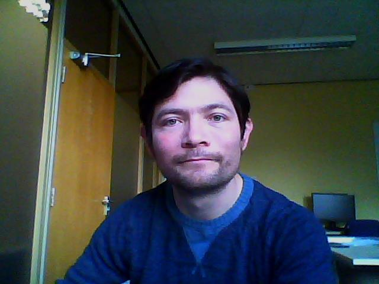

Daniel Ballesteros Chávez
My research is on elliptic partial differential equations of fully nonlinear type
that appear in geometric problems, for instance, prescribed curvature. A classical
problem of this type is the Minkowski problem. I am also interested in the geometry
of hypersurfaces in both Riemannian and semi-Riemannian manifolds.
Articles
Notes
Why I like PDE
Teaching
Talks
"Fully nonlinear PDE on the sphere from prescribed curvature problem in
hyperbolic space".
British Mathematical Colloquium. Durham, UK. Apr 2017.
"On the Minkowski Problem in Hyperbolic Space".
9th European Conference on Elliptic and Parabolic Problems.
Insitut für Mathematik Universität Zürich. Gaeta, Italy. May 2016.
"On the Existence of Convex Surfaces with Prescribed k-symmetric Curvatures".
Geometry and Topology seminar. Durham University. Nov 2015.